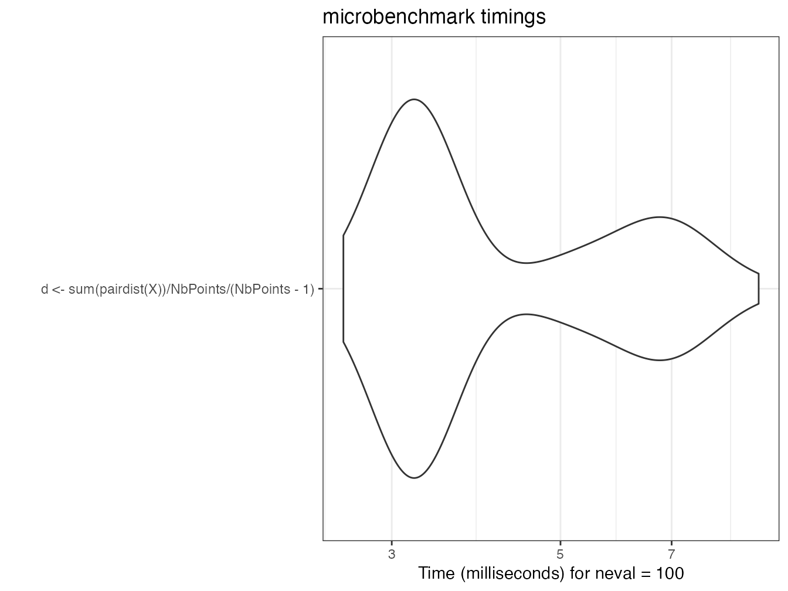
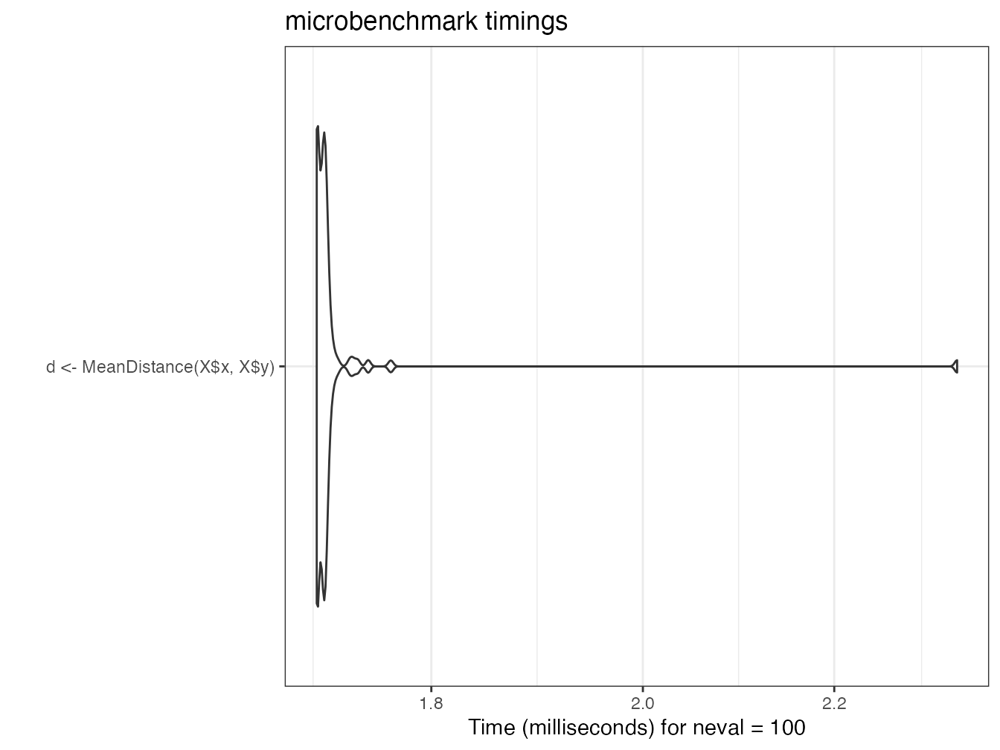
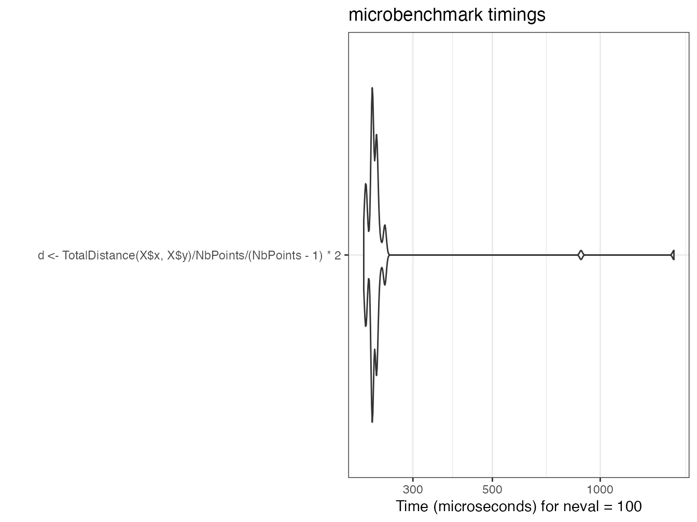

2 Utiliser R
La documentation consacrée à l’apprentissage de R est florissante. Les ouvrages suivants sont une sélection arbitraire mais utile pour progresser:
- L’Introduction à R et au tidyverse (Barnier 2020) est un excellent cours de prise en main.
- Advanced R (Wickham 2014) est la référence pour maîtriser les subtilités du langage et bien comprendre le fonctionnement de R.
- R for Data Science (Wickham et Grolemund 2016) présente une méthode de travail complète, cohérente avec le tidyverse.
- Enfin, Efficient R programming (Gillespie et Lovelace 2016) traite de l’optimisation du code.
Quelques aspects avancés du codage sont vus ici. Des précisions sur les différents langages de R sont utiles pour la création de packages. Les environnements sont présentés ensuite, pour la bonne compréhension de la recherche des objets appelés par le code. Enfin, l’optimisation des performances du code est traitée en détail (boucles, code C++ et parallélisation) et illustrée par une étude de cas.
2.1 Les langages de R
R comprend plusieurs langages de programmation. Le plus courant est S3, mais ce n’est pas le seul17.
2.1.1 Base
Le cœur de R est constitué des fonctions primitives et structures de données de base comme la fonction sum et les données de type matrix:
pryr::otype(sum)## [1] "base"typeof(sum)## [1] "builtin"pryr::otype(matrix(1))## [1] "base"typeof(matrix(1))## [1] "double"Le package pryr permet d’afficher le langage dans lequel des objets sont définis.
La fonction typeof() affiche le type de stockage interne des objets:
- la fonction
sum()appartient au langage de base de R et est une fonction primitive (builtin); - les éléments de la matrice numérique contenant un seul 1 sont des réels à double précision, et la matrice elle-même est définie dans le langage de base.
Les fonctions primitives sont codées en C et sont très rapides. Elles sont toujours disponibles, quels que soient les packages chargés. Leur usage est donc à privilégier.
2.1.2 S3
S3 est le langage le plus utilisé, souvent le seul connu par les utilisateurs de R.
C’est un langage orienté objet dans lequel les classes, c’est-à-dire le type des objets, sont déclaratives.
MonPrenom <- "Eric"
class(MonPrenom) <- "Prenom"La variable MonPrenom est ici de classe “Prenom” par une simple déclaration.
Contrairement au fonctionnement d’un langage orienté objet classique18, les méthodes S3 sont liées aux fonctions, pas aux objets.
# Affichage par défaut
MonPrenom## [1] "Eric"
## attr(,"class")
## [1] "Prenom"print.Prenom <- function(x) cat("Le prénom est", x)
# Affichage modifié
MonPrenom## Le prénom est EricDans cet exemple, la méthode print() appliquée à la classe “Prenom” est modifiée.
Dans un langage orienté objet classique, la méthode serait définie dans la classe Prenom.
Dans R, les méthodes sont définies à partir de méthodes génériques.
print est une méthode générique (“un générique”) déclaré dans base.
pryr::otype(print)## [1] "base"Son code se résume à une déclaration UseMethod("print"):
print## function (x, ...)
## UseMethod("print")
## <bytecode: 0x7fb34d20f228>
## <environment: namespace:base>Il existe beaucoup de méthodes S3 pour print:
head(methods("print"))## [1] "print.acf" "print.AES" "print.all_vars"
## [4] "print.anova" "print.any_vars" "print.aov"Chacune s’applique à une classe. print.default est utilisée en dernier ressort et s’appuie sur le type de l’objet, pas sur sa classe S3.
typeof(MonPrenom)## [1] "character"pryr::otype(MonPrenom)## [1] "S3"Un objet peut appartenir à plusieurs classes, ce qui permet une forme d’héritage des méthodes. Dans un langage orienté objet classique, l’héritage permet de définir des classes plus précises (“PrenomFrancais”) qui héritent de classes plus générales (“Prenom”) et bénéficient de cette façon de leurs méthodes sans avoir à les redéfinir. Dans R, l’héritage consiste simplement à déclarer un vecteur de classes de plus en plus larges pour un objet:
# Définition des classes par un vecteur
class(MonPrenom) <- c("PrenomFrancais", "Prenom")
# Ecriture alternative, avec inherits()
inherits(MonPrenom, what = "PrenomFrancais")## [1] TRUEinherits(MonPrenom, what = "Prenom")## [1] TRUELe générique cherche une méthode pour chaque classe, dans l’ordre de leur déclaration.
print.PrenomFrancais <- function(x) cat("Prénom français:",
x)
MonPrenom## Prénom français: EricEn résumé, S3 est le langage courant de R. Presque tous les packages sont écrits en S3. Les génériques sont partout mais passent inaperçus, par exemple dans des packages:
library("entropart")
.S3methods(class = "SpeciesDistribution")## [1] autoplot plot
## see '?methods' for accessing help and source code
La fonction .S3methods() permet d’afficher toutes les méthodes disponibles pour une classe, par opposition à methods() qui affiche toutes les classes pour lesquelles la méthode passée en argument est définie.
De nombreuses fonctions primitives de R sont des méthodes génériques.
Utiliser l’aide help(InternalMethods) pour les découvrir.
2.1.3 S4
S4 est une évolution de S3 qui structure les classes pour se rapprocher d’un langage orienté objet classique:
- les classes doivent être définies explicitement, pas simplement déclarées;
- les attributs (c’est-à-dire les variables décrivant les objets), appelés slots, sont déclarés explicitement;
- le constructeur, c’est-à-dire la méthode qui crée un nouvelle instance d’une classe (c’est-à-dire une variable contenant un objet de la classe), est explicite.
En reprenant l’exemple précédent, la syntaxe S4 est la suivante:
# Définition de la classe Personne, avec ses slots
setClass("Personne",
slots = list(Nom = "character", Prenom = "character"))
# Construction d'une instance
Moi <- new("Personne", Nom = "Marcon", Prenom = "Eric")
# Langage
pryr::otype(Moi)## [1] "S4"Les méthodes appartiennent toujours aux fonctions.
Elles sont déclarées par la fonction setMethod():
setMethod("print", signature = "Personne", function(x, ...) {
cat("La personne est:", x@Prenom, x@Nom)
})
print(Moi)## La personne est: Eric MarconLes attributs sont appelés par la syntaxe variable@slot.
En résumé, S4 est plus rigoureux que S3. Quelques packages sur CRAN : Matrix, sp, odbc… et beaucoup sur Bioconductor sont écrits en S4 mais le langage est maintenant clairement délaissé au profit de S3, notamment à cause du succès du tidyverse.
2.1.4 RC
RC a été introduit dans R 2.12 (2010) avec le package methods.
Les méthodes appartiennent aux classes, comme en C++: elles sont déclarées dans la classe et appelées à partir des objets.
library("methods")
# Déclaration de la classe
PersonneRC <- setRefClass("PersonneRC",
fields = list(Nom = "character", Prenom = "character"),
methods = list(print = function() cat(Prenom, Nom)))
# Constructeur
MoiRC <- new("PersonneRC", Nom = "Marcon", Prenom ="Eric")
# Langage
pryr::otype(MoiRC)## [1] "RC"# Appel de la méthode print
MoiRC$print()## Eric MarconRC est un langage confidentiel, bien que ce soit le premier “vrai” langage orienté objet de R.
2.1.5 S6
S619 perfectionne RC mais n’est pas inclus dans R: il nécessite d’installer son package.
Les attributs et les méthodes peuvent être publics ou privés.
Une méthode initialize() est utilisée comme constructeur.
library(R6)
PersonneR6 <- R6Class("PersonneR6", public = list(Nom = "character",
Prenom = "character", initialize = function(Nom = NA, Prenom = NA) {
self$Nom <- Nom
self$Prenom <- Prenom
}, print = function() cat(self$Prenom, self$Nom)))
MoiR6 <- PersonneR6$new(Nom = "Marcon", Prenom = "Eric")
MoiR6$print()## Eric MarconS6 permet de programmer rigoureusement en objet mais est très peu utilisé. Les performances de S6 sont bien supérieures à celles de RC mais sont inférieures à celles de S320.
La non-inclusion de R6 à R est montrée par pryr:
pryr::otype(MoiR6)## [1] "S3"2.1.6 Tidyverse
Le tidyverse est un ensemble de packages cohérents qui ont fait évoluer la façon de programmer R. L’ensemble des packages indispensables peut être chargé par le package tidyverse qui n’a pas d’autre utilité:
library("tidyverse")Il ne s’agit pas d’un nouveau langage à proprement parler mais plutôt d’une extension de S3, avec de profondes modifications techniques, notamment l’évaluation non conventionnelle des expressions21, qu’il n’est pas essentiel de maîtriser en détail.
Ses principes sont inscrits dans un manifeste22. Son apport le plus visible pour l’utilisateur sont l’enchaînement des commandes dans un flux (pipeline de code).
En programmation standard, l’enchaînement des fonctions s’écrit par emboîtements successifs, ce qui en rend la lecture difficile, surtout quand des arguments sont nécessaires:
# Logarithme de base 2 de la moyenne de 100 tirages
# aléatoires dans une loi uniforme
log(mean(runif(100)), base = 2)## [1] -1.127903Dans le tidyverse, les fonctions s’enchaînent, ce qui correspond souvent mieux à la réflexion du programmeur sur le traitement des données:
# 100 tirages aléatoires dans une loi uniforme
runif(100) %>%
# Moyenne
mean %>%
# Logarithme
log(base=2)## [1] -0.9772102Le tuyau %>% est un opérateur qui appelle la fonction suivante en lui passant comme premier argument le résultat de la fonction précédente.
Les arguments supplémentaires sont passés normalement: pour la lisibilité du code, il est indispensable de les nommer.
La plupart des fonctions de R sont utilisables sans difficultés dans le tidyverse bien qu’elles n’aient pas été prévues pour cela: il suffit que leur premier argument soit les données à traiter.
Le pipeline ne permet de passer qu’une seule valeur à la fonction suivante, ce qui interdit les fonctions multidimensionnelles, de type f(x,y).
La structure de données préférée est le tibble, qui est un dataframe amélioré: sa méthode print() est plus lisible, et il corrige quelques comportements non-intuitifs des dataframes, comme la conversion automatique en vecteurs des dataframes à une seule colonne.
Les colonnes du dataframe ou du tibble permettent de passer autant de données que nécessaire.
Enfin, la visualisation des données est prise en charge par ggplot2 qui s’appuie sur une grammaire des graphiques (Wickham 2010) solide sur le plan théorique. Schématiquement, un graphique est construit selon le modèle suivant:
ggplot(data = <DATA>) +
<GEOM_FUNCTION>(
mapping = aes(<MAPPINGS>),
stat = <STAT>,
position = <POSITION>
) +
<COORDINATE_FUNCTION> +
<FACET_FUNCTION>- les données sont obligatoirement un dataframe;
- la géométrie est le type de graphique choisi (points, lignes, histogrammes ou autre);
- l’esthétique (fonction
aes()) désigne ce qui est représenté: c’est la correspondance entre les colonnes du dataframe et les éléments nécessaires à la géométrie; - la statistique est le traitement appliqué aux données avant de les transmettre à la géométrie (souvent “identity”, c’est-à-dire aucune transformation mais “boxplot” pour une boîte à moustache).
Les données peuvent être transformées par une fonction d’échelle, comme
scale_y_log10(); - la position est l’emplacement des objets sur le graphique (souvent “identity”; “stack” pour un histogramme empilé, “jitter” pour déplacer légèrement les points superposés dans un
geom_point); - les coordonnées définissent l’affichage du graphique (
coord_fixed()pour ne pas déformer une carte par exemple) ; - enfin, les facettes offrent la possibilité d’afficher plusieurs aspects des mêmes données en produisant un graphique par modalité d’une variable.
L’ensemble formé par le pipeline et ggplot2 permet des traitements complexes dans un code lisible. La figure 2.1 montre le résultat du code suivant:
# Données sur les diamants fournies par ggplot2
diamonds %>%
# Ne conserver que les diamants de plus d'un demi-carat
filter(carat > 0.5) %>%
# Graphique : prix en fonction du poids
ggplot(aes(x = carat, y = price)) +
# Nuage de points
geom_point() +
# Echelle logarithmique
scale_x_log10() +
scale_y_log10() +
# Régression linéaire
geom_smooth(method = "lm")Figure 2.1: Prix des diamants en fonction de leur poids. Démonstration du code de ggplot2 combiné au traitement de données du tidyverse.
Dans cette figure, deux géométries (nuage de points et régression linéaire) partagent la même esthétique (prix en fonction du poids en carats) qui est donc déclarée en amont, dans la fonction ggplot().
Le tidyverse est documenté en détail dans Wickham et Grolemund (2016) et ggplot2 dans Wickham (2017).
2.2 Environnements
Les objets de R, données et fonctions, sont nommés. Comme R est modulaire, avec la possibilité de lui ajouter un nombre indéterminé de packages, il est très probable que des conflits de nom apparaissent. Pour les régler, R dispose d’un système rigoureux de précédence des noms: le code s’exécute dans un environnement défini, héritant d’environnements parents.
2.2.1 Organisation
R démarre dans un environnement vide. Chaque package chargé crée un environnement fils pour former une pile des environnements, dont chaque nouvel élément est appelé “fils” du précédent, qui est son “parent”.
La console se trouve dans l’environnement global, fils du dernier package chargé.
search()## [1] ".GlobalEnv" "package:R6"
## [3] "package:entropart" "package:forcats"
## [5] "package:stringr" "package:dplyr"
## [7] "package:purrr" "package:readr"
## [9] "package:tidyr" "package:tibble"
## [11] "package:ggplot2" "package:tidyverse"
## [13] "package:kableExtra" "package:stats"
## [15] "package:graphics" "package:grDevices"
## [17] "package:utils" "package:datasets"
## [19] "package:methods" "Autoloads"
## [21] "package:base"Le code d’une fonction appelée de la console s’exécute dans un environnement fils de l’environnement global:
# Environnement actuel
environment()## <environment: R_GlobalEnv># La fonction f affiche son environnement
f <- function() environment()
# Affichage de l'environnement de la fonction
f()## <environment: 0x7fb359b53300># Environnement parent de celui de la fonction
parent.env(f())## <environment: R_GlobalEnv>2.2.2 Recherche
La recherche des objets commence dans l’environnement local. S’il n’est pas trouvé, il est cherché dans l’environnement parent, puis dans le parent du parent, jusqu’à l’épuisement des environnements qui génère une erreur indiquant que l’objet n’a pas été trouvé.
Exemple:
# Variable q définie dans l'environnement global
q <- "GlobalEnv"
# Fonction définissant q dans son environnement
qLocalFonction <- function() {
q <- "Fonction"
return(q)
}
# La variable locale est retournée
qLocalFonction()## [1] "Fonction"# Fonction (mal écrite) utilisant une variable qu'elle ne
# définit pas
qGlobalEnv <- function() {
return(q)
}
# La variable de l'environnement global est retournée
qGlobalEnv()## [1] "GlobalEnv"# Suppression de cette variable
rm(q)
# La fonction base::q est retournée
qGlobalEnv()## function (save = "default", status = 0, runLast = TRUE)
## .Internal(quit(save, status, runLast))
## <bytecode: 0x7fb35bbc30b0>
## <environment: namespace:base>La variable q est définie dans l’environnement global.
La fonction qLocalFonction définit sa propre variable q.
L’appel de la fonction retourne la valeur locale de la fonction parce qu’elle se trouve dans l’environnement de la fonction.
La fonction qGlobalEnv retourne la variable q qu’elle ne définit pas localement.
Elle la recherche donc dans son environnement parent et trouve la variable définie dans l’environnement global.
En supprimant la variable de l’environnement global par rm(q), la fonction qGlobalEnv() parcourt la pile des environnements jusqu’à trouver un objet nommé q dans le package base, qui est la fonction permettant de quitter R.
Elle aurait pu trouver un autre objet si un package contenant un objet q avait été chargé.
Pour éviter ce comportement erratique, une fonction ne doit jamais appeler un objet non défini dans son propre environnement.
2.2.3 Espaces de nom des packages
Il est temps de définir précisément ce que les packages rendent visible.
Les packages contiennent des objets (fonctions et données) qu’ils exportent ou non.
Ils sont habituellement appelés par la fonction library() qui effectue deux opérations:
- elle charge le package en mémoire, ce qui permet d’accéder à tous ses objets avec la syntaxe
package::objetpour les objets exportés etpackage:::objetpour ceux qui ne le sont pas; - elle attache ensuite le package, ce qui place son environnement en haut de la pile.
Il est possible de détacher un package avec la fonction unloadNamespace() pour le retirer de la pile des environnements.
Exemple:
# entropart chargé et attaché
library("entropart")
# Est-il attaché ?
isNamespaceLoaded("entropart")## [1] TRUE# Pile des environnements
search()## [1] ".GlobalEnv" "package:R6"
## [3] "package:entropart" "package:forcats"
## [5] "package:stringr" "package:dplyr"
## [7] "package:purrr" "package:readr"
## [9] "package:tidyr" "package:tibble"
## [11] "package:ggplot2" "package:tidyverse"
## [13] "package:kableExtra" "package:stats"
## [15] "package:graphics" "package:grDevices"
## [17] "package:utils" "package:datasets"
## [19] "package:methods" "Autoloads"
## [21] "package:base"# Diversity(), une fonction exportée par entropart est
# trouvée
Diversity(1, CheckArguments = FALSE)## None
## 1# Détacher et décharger entropart
unloadNamespace("entropart")
# Est-il attaché ?
isNamespaceLoaded("entropart")## [1] FALSE# Pile des environnements, sans entropart
search()## [1] ".GlobalEnv" "package:R6"
## [3] "package:forcats" "package:stringr"
## [5] "package:dplyr" "package:purrr"
## [7] "package:readr" "package:tidyr"
## [9] "package:tibble" "package:ggplot2"
## [11] "package:tidyverse" "package:kableExtra"
## [13] "package:stats" "package:graphics"
## [15] "package:grDevices" "package:utils"
## [17] "package:datasets" "package:methods"
## [19] "Autoloads" "package:base"# Diversity() est introuvable
tryCatch(Diversity(1), error = function(e) print(e))## <simpleError in Diversity(1): could not find function "Diversity"># mais peut être appelée avec son nom complet
entropart::Diversity(1, CheckArguments = FALSE)## None
## 1L’appel de entropart::Diversity() charge le package (c’est-à-dire, exécute implicitement loadNamespace("entropart")) mais ne l’attache pas.
En pratique, il faut limiter le nombre de package attachés pour limiter le risque d’appeler une fonction non désirée, homonyme de la fonction recherchée.
Dans les cas critiques, il faut utiliser le nom complet de la fonction: package::fonction().
Un problème fréquent concerne la fonction filter() de dplyr homonyme de celle de stats.
Le package stats est habituellement chargé avant dplyr, un package du tidyverse.
stats::filter() doit donc être appelée explicitement.
Cependant, le package dplyr ou tidyverse (qui attache tous les packages du tidyverse) peut être chargé systématiquement en créant un fichier .RProfile à la racine du projet contenant la commande:
library("tidyverse")Dans ce cas, dplyr est chargé avant stats et c’est sa fonction qui est inaccessible.
2.3 Mesure du temps d’exécution
Le temps d’exécution d’un code long peut être mesuré très simplement par la commande system.time.
Pour des temps d’exécution très courts, il est nécessaire de répéter la mesure: c’est l’objet du package microbenchmark.
2.3.1 system.time
La fonction retourne le temps d’exécution du code.
# Ecart absolu moyen de 1000 valeurs dans une loi uniforme,
# répété 100 fois
system.time(for (i in 1:100) mad(runif(1000)))## user system elapsed
## 0.020 0.000 0.0212.3.2 microbenchmark
Le package microbenchmark est le plus avancé.
L’objectif est de comparer la vitesse du calcul du carré d’un vecteur (ou d’un nombre) en le multipliant par lui-même (\(x \times x\)) ou en l’élevant à la puissance 2 (\(x^2\)).
# Fonctions à tester
f1 <- function(x) x * x
f2 <- function(x) x^2
f3 <- function(x) x^2.1
f4 <- function(x) x^3
# Initialisation
X <- rnorm(10000)
# Test
library("microbenchmark")
(mb <- microbenchmark(f1(X), f2(X), f3(X), f4(X)))## Unit: microseconds
## expr min lq mean median uq
## f1(X) 40.813 43.0640 62.86464 44.6725 47.9560
## f2(X) 48.282 51.2580 70.33143 52.3055 57.3290
## f3(X) 279.472 281.2380 307.66624 282.9800 290.7585
## f4(X) 412.237 414.7845 448.80810 419.7845 432.2950
## max neval
## 1444.052 100
## 1632.009 100
## 1772.684 100
## 2009.261 100Le tableau retourné contient les temps minimum, médian, moyen, max et les premiers et troisièmes quartiles, ainsi que le nombre de répétitions.
La valeur médiane est à comparer.
Le nombre de répétition est par défaut de 100, à moduler (argument times) en fonction de la complexité du calcul.
Le résultat du test, un objet de type microbenchmark, est un tableau brut des temps d’exécution.
L’analyse statistique est faite par les méthodes print et summary.
Pour choisir les colonnes à afficher, utiliser la syntaxe suivante:
summary(mb)[, c("expr", "median")]## expr median
## 1 f1(X) 44.6725
## 2 f2(X) 52.3055
## 3 f3(X) 282.9800
## 4 f4(X) 419.7845Pour faire des calculs sur ces résultats, il faut les stocker dans une variable.
Pour empêcher l’affichage dans la console, la solution la plus simple est d’utiliser la fonction capture.output en affectant son résultat à une variable.
dummy <- capture.output(mbs <- summary(mb))Le test précédent est affiché à nouveau.
summary(mb)[, c("expr", "median")]## expr median
## 1 f1(X) 44.6725
## 2 f2(X) 52.3055
## 3 f3(X) 282.9800
## 4 f4(X) 419.7845Le temps de calcul est à peu près identique entre \(x \times x\) et \(x^2\). Le calcul de puissance est nettement plus long, surtout si la puissance n’est pas entière, parce qu’il nécessite un calcul de logarithme. Le calcul de la puissance 2 est donc optimisé par R pour éviter l’usage du log.
Deux représentations graphiques sont disponibles: les violons représentent la densité de probabilité du temps d’exécution; les boîtes à moustache sont classiques.
library("ggplot2")
autoplot(mb)
boxplot(mb)
2.3.3 Profilage
profvis est l’outil de profilage de RStudio.
Il permet de suivre le temps d’exécution de chaque ligne de code et la mémoire utilisée. L’objectif est de détecter les portions de code lentes, à améliorer.
library(profvis)
p <- profvis({
# Calculs de cosinus
cos(runif(10^7))
# 1/2 seconde de pause
pause(1/2)
})
htmlwidgets::saveWidget(p, "docs/profile.html")Le résultat est un fichier HTML contenant le rapport de profilage23. On peut observer que le temps de tirage des nombres aléatoires est similaire à celui du calcul des cosinus.
Lire la documentation complète24 sur le site de RStudio.
2.4 Boucles
Le cas le plus fréquent de code long à exécuter est celui des boucles: le même code est répété un grand nombre de fois.
2.4.1 Fonctions vectorielles
La plupart des fonctions de R sont vectorielles: les boucles sont traitées de façon interne, extrêmement rapide. Il faut donc raisonner en termes de vecteurs plutôt que de scalaires.
# Tirage de deux vecteurs de trois nombres aléatoires entre
# 0 et 1
x1 <- runif(3)
x2 <- runif(3)
# Racine carrée des trois nombres de x1
sqrt(x1)## [1] 0.9427738 0.8665204 0.4586981# Sommes respective des trois nombres de x1 et x2
x1 + x2## [1] 1.6262539 1.6881583 0.9063973Il faut aussi écrire des fonctions vectorielles sur leur premier argument.
La fonction lnq du package entropart retourne le logarithme déformé d’ordre \(q\) d’un nombre \(x\).
# Code de la fonction
entropart::lnq## function (x, q)
## {
## if (q == 1) {
## return(log(x))
## }
## else {
## Log <- (x^(1 - q) - 1)/(1 - q)
## Log[x < 0] <- NA
## return(Log)
## }
## }
## <bytecode: 0x7fb33d8f6b70>
## <environment: namespace:entropart>Pour qu’une fonction soit vectorielle, chaque ligne de son code doit permettre que le premier argument soit traité comme un vecteur.
Ici: log(x) et x^ sont une fonction et un opérateur vectoriels et la condition [x < 0] retourne aussi un vecteur.
2.4.2 lapply
Les codes qui ne peuvent pas être écrits comme une fonction vectorielle nécessitent des boucles.
lapply() applique une fonction à chaque élément d’une liste.
Elle est déclinée sous plusieurs versions:
lapply()renvoie une liste (économise le temps de leur réorganisation dans un tableau);sapply()renvoie un dataframe en rassemblant les listes parsimplify2array();vapply()est presque identique mais demande que le type de données du résultat soit fourni.
# Tirage de 1000 valeurs dans une loi uniforme
x1 <- runif(1000)
# La racine carrée peut être calculée pour le vecteur ou
# chaque valeur
identical(sqrt(x1), sapply(x1, FUN = sqrt))## [1] TRUEmb <- microbenchmark(sqrt(x1), lapply(x1, FUN = sqrt), sapply(x1,
FUN = sqrt), vapply(x1, FUN = sqrt, FUN.VALUE = 0))
summary(mb)[, c("expr", "median")]## expr median
## 1 sqrt(x1) 4.6680
## 2 lapply(x1, FUN = sqrt) 305.6015
## 3 sapply(x1, FUN = sqrt) 364.6970
## 4 vapply(x1, FUN = sqrt, FUN.VALUE = 0) 298.8190lapply() est beaucoup plus lent qu’une fonction vectorielle.
sapply() nécessite plus de temps pour simplify2array(), qui doit détecter comment rassembler les résultats.
Enfin, vapply() économise le temps de détermination du type de données du résultat et permet d’accélérer le calcul avec peu d’efforts.
2.4.3 Boucles for
Les boucles sont gérées par la fonction for.
Elles ont la réputation d’être lentes dans R parce que le code à l’intérieur de la boucle doit être interprété à chaque exécution.
Ce n’est plus le cas depuis la version 3.5 de R: les boucles sont compilées systématiquement avant leur exécution.
Le comportement du compilateur “juste à temps” est défini par la fonction enableJIT.
Le niveau par défaut est 3: les fonctions sont toutes compilées, et les boucles dans le code aussi.
Pour évaluer le gain de performance, le code suivant supprime toute compilation automatique, et compare la même boucle compilée ou non.
library("compiler")
# Pas de compilation automatique
enableJIT(level = 0)## [1] 3# Boucle pour calculer la racine carrée d'un vecteur
Boucle <- function(x) {
# Initialisation du vecteur de résultat, indispensable
Racine <- vector("numeric", length = length(x))
# Boucle
for (i in 1:length(x)) Racine[i] <- sqrt(x[i])
return(Racine)
}
# Version compilée
Boucle2 <- cmpfun(Boucle)
# Comparaison
mb <- microbenchmark(Boucle(x1), Boucle2(x1))
(mbs <- summary(mb)[, c("expr", "median")])## expr median
## 1 Boucle(x1) 847.265
## 2 Boucle2(x1) 78.581# Compilation automatique par défaut depuis la version 3.5
enableJIT(level = 3)## [1] 0Le gain est considérable: de 1 à 11.
Les boucles for sont maintenant nettement plus rapides que vapply.
# Test
mb <- microbenchmark(vapply(x1, FUN = sqrt, 0), Boucle(x1))
summary(mb)[, c("expr", "median")]## expr median
## 1 vapply(x1, FUN = sqrt, 0) 296.2795
## 2 Boucle(x1) 76.5660Attention, le test de performance peut être trompeur:
# Préparation du vecteur de résultat
Racine <- vector("numeric", length = length(x1))
# Test
mb <- microbenchmark(vapply(x1, FUN = sqrt, 0),
for(i in 1:length(x1))
Racine[i] <- sqrt(x1[i]))
summary(mb)[, c("expr", "median")]## expr
## 1 vapply(x1, FUN = sqrt, 0)
## 2 for (i in 1:length(x1)) Racine[i] <- sqrt(x1[i])
## median
## 1 302.1985
## 2 3594.1100Dans ce code, la boucle for n’est pas compilée donc elle est beaucoup plus lente que dans le cadre normal de son utilisation (dans une fonction ou au niveau supérieur du code).
Les boucles longues permettent un suivi de leur progression par une barre de texte, ce qui est un autre avantage. La fonction suivante exécute des pauses d’un dixième de seconde pendant le temps passé en paramètre (en secondes).
BoucleSuivie <- function(duree = 1) {
# Barre de progression
pgb <- txtProgressBar(min = 0, max = duree * 10)
# Boucle
for (i in 1:(duree * 10)) {
# Pause d'un dixième de seconde
Sys.sleep(1/10)
# Suivi de la progression
setTxtProgressBar(pgb, i)
}
}
BoucleSuivie()## ============================================================2.4.4 replicate
replicate() répète une instruction.
replicate(3, runif(1))## [1] 0.9453453 0.5262818 0.7233425Ce code est équivalent à runif(3), avec des performances similaires à celles de vapply: de 50 à 100 fois plus lent qu’une fonction vectorielle.
mb <- microbenchmark(replicate(1000, runif(1)), runif(1000))
summary(mb)[, c("expr", "median")]## expr median
## 1 replicate(1000, runif(1)) 4146.871
## 2 runif(1000) 34.1692.4.5 Vectorize
Vectorize() rend vectorielle une fonction qui ne l’est pas, par des boucles.
Ecrire plutôt les boucles.
2.4.6 Statistiques marginales
apply applique une fonction aux lignes ou colonnes d’un objet en deux dimensions.
colSums et ses semblables (rowSums, colMeans, rowMeans) sont optimisées.
# Somme des colonnes numériques du jeu de données diamonds de ggplot()
# Boucle identique à l'action de apply(, 2, )
BoucleSomme <- function(Table) {
Somme <- vector("numeric", length = ncol(Table))
for (i in 1:ncol(Table)) Somme[i] <- sum(Table[, i])
return(Somme)
}
mb <- microbenchmark(BoucleSomme(diamonds[-(2:4)]),
apply(diamonds[-(2:4)], 2, sum),
colSums(diamonds[-(2:4)]))
summary(mb)[, c("expr", "median")]## expr median
## 1 BoucleSomme(diamonds[-(2:4)]) 3.877607
## 2 apply(diamonds[-(2:4)], 2, sum) 9.904540
## 3 colSums(diamonds[-(2:4)]) 2.682257apply clarifie le code mais est plus lent que la boucle, qui est à peine plus lente que colSums.
2.5 Code C++
L’intégration de code C++ dans R est largement simplifiée par le package Rcpp mais reste difficile à déboguer et donc à réserver à du code très simple (pour éviter toute erreur) et répété un grand nombre de fois (pour mériter l’effort). La préparation des données et leur vérification doivent être exécutées sous R, de même que le traitement et la présentation des résultats.
L’utilisation habituelle est l’inclusion de code C++ dans un package, mais l’utilisation hors package est possible:
- Le code C++ peut être inclus dans un document C++ (fichier avec l’extension
.cpp): il est compilé par la commandesourceCpp()qui crée les fonctions R permettant d’appeler le code C++. - Dans un document RMarkdown, des bouts de code Rcpp peuvent être créés pour y insérer le code C++: ils sont compilés et interfacés pour R au moment du tricotage.
L’exemple suivant montre comment créer une fonction C++ pour calculer le double d’un vecteur numérique.
#include <Rcpp.h>
using namespace Rcpp;
// [[Rcpp::export]]
NumericVector timesTwo(NumericVector x) {
return x * 2;
}Une fonction R du même nom que la fonction C++ est maintenant disponible.
timesTwo(1:5)## [1] 2 4 6 8 10Les performances sont deux ordres de grandeur plus rapides que le code R (voir l’étude de cas, section 2.7).
2.6 Paralléliser R
Lorsque des calculs longs peuvent être découpés en tâches indépendantes, l’exécution simultanée (parallèle) de ces tâches permet de réduire le temps de calcul total à celui de la tâche la plus longue, auquel s’ajoute le coût de la mise en place de la parallélisation (création des tâches, récupération des résultats…).
Lire l’excellente introduction de Josh Errickson25 qui détaille les enjeux et les contraintes de la parallélisation.
Deux mécanismes sont disponibles pour l’exécution de code en parallèle:
- fork: le processus en cours d’exécution est dupliqué sur plusieurs cœurs du processeur de l’ordinateur de calcul. C’est la méthode la plus simple mais elle ne fonctionne pas sous Windows (limite du système d’exploitation).
- socket: un cluster est constitué, soit physiquement (un ensemble d’ordinateurs exécutant R est nécessaire) soit logiquement (une instance de R sur chaque cœur de l’ordinateur utilisé). Les membres du cluster communiquent par le réseau (le réseau interne de l’ordinateur utilisé pour un cluster logique).
Différents packages de R permettent de mettre en œuvre ces mécanismes.
2.6.1 mclapply (fork)
La fonction mclapply du package parallel a la même syntaxe que lapply mais parallélise l’exécution des boucles.
Sous Windows, elle n’a aucun effet puisque le système ne permet pas les fork: elle appelle simplement lapply.
Cependant, un contournement existe pour émuler mclapply sous Windows en appelant parLapply, qui utilise un cluster.
##
## mclapply.hack.R
##
## Nathan VanHoudnos
## nathanvan AT northwestern FULL STOP edu
## July 14, 2014
##
## A script to implement a hackish version of
## parallel:mclapply() on Windows machines.
## On Linux or Mac, the script has no effect
## beyond loading the parallel library.
require(parallel) ## Loading required package: parallel## Define the hack
# mc.cores argument added: Eric Marcon
mclapply.hack <- function(..., mc.cores=detectCores()) {
## Create a cluster
size.of.list <- length(list(...)[[1]])
cl <- makeCluster( min(size.of.list, mc.cores) )
## Find out the names of the loaded packages
loaded.package.names <- c(
## Base packages
sessionInfo()$basePkgs,
## Additional packages
names( sessionInfo()$otherPkgs ))
tryCatch( {
## Copy over all of the objects within scope to
## all clusters.
this.env <- environment()
while( identical( this.env, globalenv() ) == FALSE ) {
clusterExport(cl,
ls(all.names=TRUE, env=this.env),
envir=this.env)
this.env <- parent.env(environment())
}
clusterExport(cl,
ls(all.names=TRUE, env=globalenv()),
envir=globalenv())
## Load the libraries on all the clusters
## N.B. length(cl) returns the number of clusters
parLapply( cl, 1:length(cl), function(xx){
lapply(loaded.package.names, function(yy) {
require(yy , character.only=TRUE)})
})
## Run the lapply in parallel
return( parLapply( cl, ...) )
}, finally = {
## Stop the cluster
stopCluster(cl)
})
}
## Warn the user if they are using Windows
if( Sys.info()[['sysname']] == 'Windows' ){
message(paste(
"\n",
" *** Microsoft Windows detected ***\n",
" \n",
" For technical reasons, the MS Windows version of mclapply()\n",
" is implemented as a serial function instead of a parallel\n",
" function.",
" \n\n",
" As a quick hack, we replace this serial version of mclapply()\n",
" with a wrapper to parLapply() for this R session. Please see\n\n",
" http://www.stat.cmu.edu/~nmv/2014/07/14/
implementing-mclapply-on-windows \n\n",
" for details.\n\n"))
}
## If the OS is Windows, set mclapply to the
## the hackish version. Otherwise, leave the
## definition alone.
mclapply <- switch( Sys.info()[['sysname']],
Windows = {mclapply.hack},
Linux = {mclapply},
Darwin = {mclapply})
## end mclapply.hack.RLe code suivant teste la parallélisation d’une fonction qui renvoie son argument inchangé après une pause d’un quart de seconde.
Ce document est tricoté avec 3 cœurs, qui sont tous utilisés sauf un pour ne pas saturer le système.
f <- function(x, time = 0.25) {
Sys.sleep(time)
return(x)
}
# Laisser un coeur libre pour le système
nbCoeurs <- detectCores() - 1
# Série : temps théorique = nbCoeurs/4 secondes
(tserie <- system.time(lapply(1:nbCoeurs, f)))## user system elapsed
## 0.003 0.000 0.606# Parallèle : temps théorique = 1/4 seconde
(tparallele <- system.time(mclapply(1:nbCoeurs, f, mc.cores = nbCoeurs)))## user system elapsed
## 0.005 0.018 0.265La mise en place de la parallélisation a un coût d’environ 0.015 secondes ici.
Le temps d’exécution est bien plus long en parallèle sous Windows parce que la mise en place du cluster prend bien plus de temps que la parallélisation n’en fait gagner.
La parallélisation est intéressante pour des tâches plus longues, comme une pause d’un seconde.
# Série
system.time(lapply(1:nbCoeurs, f, time = 1))## user system elapsed
## 0.001 0.000 2.133# Parallèle
system.time(mclapply(1:nbCoeurs, f, time = 1, mc.cores = nbCoeurs))## user system elapsed
## 0.001 0.003 1.072Le temps additionnel nécessaire pour l’exécution parallèle du nouveau code est relativement plus faible: les coûts deviennent inférieurs à l’économie quand le temps de chaque tâche s’allonge.
Si le nombre de tâches parallèles dépasse le nombre de cœurs utilisés, les performances s’effondrent parce que la tâche supplémentaire doit être exécutée après les premières.
system.time(mclapply(1:nbCoeurs, f, time = 1, mc.cores = nbCoeurs))## user system elapsed
## 0.002 0.006 1.078system.time(mclapply(1:(nbCoeurs + 1), f, time = 1, mc.cores = nbCoeurs))## user system elapsed
## 0.003 0.007 2.171Le temps reste ensuite stable jusqu’au double du nombre de cœurs. La figure 2.2 montre l’évolution du temps de calcul en fonction du nombre de tâches.
Taches <- 1:(2 * nbCoeurs+1)
Temps <- sapply(Taches, function(nbTaches) {
system.time(mclapply(1:nbTaches, f, time=1, mc.cores=nbCoeurs))
})
library("tidyverse")
tibble(Taches, Temps=Temps["elapsed", ]) %>%
ggplot +
geom_line(aes(x = Taches, y = Temps)) +
geom_vline(xintercept = nbCoeurs, col = "red", lty = 2) +
geom_vline(xintercept = 2 * nbCoeurs, col = "red", lty = 2)
Figure 2.2: Temps d’exécution en parallèle de tâches nécessitant une seconde (chaque tâche est une pause d’une seconde). Le nombre de tâches varie de 1 à deux fois le nombre de cœurs utilisés (égal à 2) plus une.
La forme théorique de cette courbe est la suivante:
- pour une tâche, le temps est égal à une seconde plus le temps de mise en place de la parallélisation;
- le temps devrait rester stable jusqu’au nombre de cœurs utilisés;
- quand les cœurs sont tous utilisés (pointillés rouges), le temps devrait augmenter d’une seconde puis rester stable jusqu’à la limite suivante.
En pratique, le temps de calcul est déterminé par d’autres facteurs difficilement prévisibles. La bonne pratique est d’adapter le nombre de tâches au nombre de cœurs sous peine de perte de performance.
2.6.2 parLapply (socket)
parLapply nécessite de créer un cluster, exporter les variables utiles sur chaque noeud, charger les packages nécessaires sur chaque noeud, exécuter le code et enfin arrêter le cluster.
Le code de chaque étape se trouve dans la fonction mclapply.hack ci-dessus.
Pour un usage courant, mclapply est plus rapide, sauf sous Windows, et plus simple (y compris sous Windows grâce au contournement ci-dessus.)
2.6.3 foreach
2.6.3.1 Fonctionnement
Le package foreach permet un usage avancé de la parallélisation. Lire ses vignettes.
# Manuel
vignette("foreach", "foreach")
# Boucles imbriquées
vignette("nested", "foreach")Indépendamment de la parallélisation, foreach redéfinit les boucles for.
for (i in 1:3) {
f(i)
}
# devient
library("foreach")##
## Attaching package: 'foreach'## The following objects are masked from 'package:purrr':
##
## accumulate, whenforeach(i = 1:3) %do% {
f(i)
}## [[1]]
## [1] 1
##
## [[2]]
## [1] 2
##
## [[3]]
## [1] 3La fonction foreach retourne une liste contenant les résultats de chaque boucle.
Les éléments de la liste peuvent être combinés par une fonction quelconque, comme c.
foreach(i = 1:3, .combine = "c") %do% {
f(i)
}## [1] 1 2 3La fonction foreach est capable d’utiliser des itérateurs, c’est-à-dire des fonctions qui ne passent à la boucle que les données dont elle a besoin sans charger les autres en mémoire.
Ici, l’itérateur icount passe les valeurs 1, 2 et 3 individuellement, sans charger le vecteur 1:3 en mémoire.
library("iterators")
foreach(i = icount(3), .combine = "c") %do% {
f(i)
}## [1] 1 2 3Elle est donc très utile quand chaque objet de la boucle utilise une grande quantité de mémoire.
2.6.3.2 Parallélisation
Remplacer l’opérateur %do% par %dopar% parallélise les boucles, à condition qu’un adaptateur, c’est-à-dire un package intermédiaire entre foreach et un package chargé de l’implémentation de la parallélisation, soit chargé.
doParallel est un adaptateur pour utiliser le package parallel livré avec R.
library(doParallel)
registerDoParallel(cores = nbCoeurs)
# Série
system.time(foreach(i = icount(nbCoeurs), .combine = "c") %do%
{
f(i)
})## user system elapsed
## 0.004 0.000 0.629# Parallèle
system.time(foreach(i = icount(nbCoeurs), .combine = "c") %dopar%
{
f(i)
})## user system elapsed
## 0.008 0.018 0.296Le coût fixe de la parallélisation est faible.
2.7 Etude de cas
Cette étude de cas permet de tester les différentes techniques vues plus haut pour résoudre un problème concret. L’objectif est de calculer la distance moyenne entre deux points d’un semis aléatoire de 1000 points dans une fenêtre carrée de côté 1.
Son espérance est calculable26. Elle est égale à \(\frac{2+\sqrt{2}+5\ln{(1+\sqrt{2})}}{15} \approx 0,5214\).
2.7.1 Création des données
Le semis de points est créé avec le package spatstat.
NbPoints <- 1000
library("spatstat")
X <- runifpoint(NbPoints)2.7.2 Spatstat
La fonction pairdist() de spatstat retourne la matrice des distances entre les points.
La distance moyenne est calculée en divisant la somme par le nombre de paires de points distincts.
mb <- microbenchmark(d <- sum(pairdist(X))/NbPoints/(NbPoints -
1))
# suppressmessages pour éliminer les messages superflus
suppressMessages(autoplot(mb))
d## [1] 0.5154062La fonction est rapide parce qu’elle est codée en langage C dans le package spatstat pour le cœur de ses calculs.
2.7.3 apply
La distance peut être calculée par deux sapply() imbriqués.
fsapply1 <- function() {
distances <- sapply(1:NbPoints, function(i) sapply(1:NbPoints,
function(j) sqrt((X$x[i] - X$x[j])^2 + (X$y[i] - X$y[j])^2)))
return(sum(distances)/NbPoints/(NbPoints - 1))
}
system.time(d <- fsapply1())## user system elapsed
## 5.758 0.041 5.812d## [1] 0.5154062Un peu de temps peut être gagnée en remplaçant sapply par vapply: le format des résultats n’a pas à être déterminé par la fonction.
Le gain est négligeable sur un long calcul comme celui-ci mais important pour des calculs courts.
fsapply2 <- function() {
distances <- vapply(1:NbPoints, function(i) vapply(1:NbPoints,
function(j) sqrt((X$x[i] - X$x[j])^2 + (X$y[i] - X$y[j])^2),
0), 1:1000 + 0)
return(sum(distances)/NbPoints/(NbPoints - 1))
}
system.time(d <- fsapply2())## user system elapsed
## 5.402 0.018 5.438d## [1] 0.5154062Le format de sortie n’est pas toujours évident à écrire:
- il doit respecter la taille des données: un vecteur de taille 1000 pour la boucle externe, un scalaire pour la boucle interne.
- il doit respecter leur type:
0pour un entier,0.0pour un réel. Dans la boucle externe, l’ajout de0.0au vecteur d’entiers le transforme en vecteur de réels.
Une amélioration plus significative consiste à ne calculer les racines carrées qu’à la fin de la boucle, pour profiter de la vectorisation de la fonction.
fsapply3 <- function() {
distances <- vapply(1:NbPoints, function(i) vapply(1:NbPoints,
function(j) (X$x[i] - X$x[j])^2 + (X$y[i] - X$y[j])^2,
0), 1:1000 + 0)
return(sum(sqrt(distances))/NbPoints/(NbPoints - 1))
}
system.time(d <- fsapply3())## user system elapsed
## 5.333 0.023 5.362d## [1] 0.5154062Les calculs sont effectués deux fois (distance entre les points \(i\) et \(j\), mais aussi entre les points \(j\) et \(i\)): un test sur les indices permet de diviser presque le temps par 2 (pas tout à fait parce que les boucles sans calcul, qui retournent \(0\), prennent du temps).
fsapply4 <- function() {
distances <- vapply(1:NbPoints, function(i) {
vapply(1:NbPoints, function(j) {
if (j > i) {
(X$x[i] - X$x[j])^2 + (X$y[i] - X$y[j])^2
} else {
0
}
}, 0)
}, 1:1000 + 0)
return(sum(sqrt(distances))/NbPoints/(NbPoints - 1) * 2)
}
system.time(d <- fsapply4())## user system elapsed
## 3.131 0.012 3.157d## [1] 0.5154062En parallèle, le temps de calcul n’est pas amélioré sous Windows parce que les tâches individuelles sont trop courtes. Sous MacOS ou Linux, le calcul est accéléré.
fsapply5 <- function() {
distances <- mclapply(1:NbPoints, function(i) {
vapply(1:NbPoints, function(j) {
if (j > i) {
(X$x[i] - X$x[j])^2 + (X$y[i] - X$y[j])^2
} else {
0
}
}, 0)
})
return(sum(sqrt(simplify2array(distances)))/NbPoints/(NbPoints -
1) * 2)
}
system.time(d <- fsapply5())## user system elapsed
## 3.596 0.396 2.035d## [1] 0.51540622.7.4 boucle for
Une boucle for est plus rapide et consomme moins de mémoire parce qu’elle ne stocke pas la matrice de distances.
distance <- 0
ffor <- function() {
for (i in 1:(NbPoints - 1)) {
for (j in (i + 1):NbPoints) {
distance <- distance + sqrt((X$x[i] - X$x[j])^2 +
(X$y[i] - X$y[j])^2)
}
}
return(distance/NbPoints/(NbPoints - 1) * 2)
}
# Temps de calcul, mémorisé
(for_time <- system.time(d <- ffor()))## user system elapsed
## 1.816 0.010 1.829d## [1] 0.5154062C’est la façon la plus simple et efficace d’écrire ce code sans parallélisation et en se limitant au langage de R.
2.7.5 boucle foreach
Deux boucles foreach imbriquées sont nécessaires ici: elles sont extrêmement lentes en comparaison d’une boucle simple. Le test est lancé ici avec 10 fois moins de points, donc 100 fois moins de distances à calculer.
NbPointsReduit <- 100
Y <- runifpoint(NbPointsReduit)
fforeach1 <- function(Y) {
distances <- foreach(i = 1:NbPointsReduit, .combine = "cbind") %:%
foreach(j = 1:NbPointsReduit, .combine = "c") %do% {
if (j > i) {
(Y$x[i] - Y$x[j])^2 + (Y$y[i] - Y$y[j])^2
} else {
0
}
}
return(sum(sqrt(distances))/NbPointsReduit/(NbPointsReduit -
1) * 2)
}
system.time(d <- fforeach1(Y))## user system elapsed
## 2.786 0.028 2.818d## [1] 0.5181951Les boucles foreach imbriquées sont à réserver à des tâches très longues (plusieurs secondes au moins) pour amortir les coûts fixes de leur mise en place.
La parallélisation est efficace dans le code ci-dessous, notamment parce qu’elle permet d’éviter les boucles foreach imbriquées. En revanche, les distances sont calculées deux fois. La performance reste très inférieure à celle d’une simple boucle for (rappel: 100 fois moins de distances sont calculées).
registerDoParallel(cores = detectCores())
fforeach3 <- function(Y) {
distances <-
foreach(i=icount(NbPointsReduit),
.combine='+') %dopar% {
distance <- 0
for (j in 1:Y$n) {
distance <- distance +
sqrt((Y$x[i]-Y$x[j])^2 + (Y$y[i]-Y$y[j])^2)
}
distance
}
return(distances/NbPointsReduit/(NbPointsReduit-1))
}
system.time(d <- fforeach3(Y))## user system elapsed
## 0.134 0.067 0.164d## [1] 0.5181951foreach dispose d’adaptateurs optimisés permettant d’utiliser des clusters physiques par exemple. Son intérêt est limité avec le package parallel.
2.7.6 RCpp
La fonction C++ permettant de calculer les distances est la suivante.
#include <Rcpp.h>
using namespace Rcpp;
// [[Rcpp::export]]
double MeanDistance(NumericVector x, NumericVector y) {
double distance=0;
double dx, dy;
for (int i=0; i < (x.length()-1); i++) {
for (int j=i+1; j < x.length(); j++) {
// Calculate distance
dx = x[i]-x[j];
dy = y[i]-y[j];
distance += sqrt(dx*dx + dy*dy);
}
}
return distance/(double)(x.length()/2*(x.length()-1));
}Elle est appelée dans R très simplement. Le temps d’exécution est très court.
mb <- microbenchmark(d <- MeanDistance(X$x, X$y))
# suppressmessages pour éliminer les messages superflus
suppressMessages(autoplot(mb))
d## [1] 0.51540622.7.7 RcppParallel
RcppParallel permet d’interfacer du code C++ parallélisé, au prix d’une syntaxe plus complexe qu’avec RCpp. Une documentation est disponible27.
La fonction C++ exportée dans R ne réalise pas les calculs mais organise seulement l’exécution en parallèle d’une autre fonction, non exportée, de type Worker.
Deux fonctions (C++) de parallélisation sont disponibles pour deux types de tâches:
parallelReducepour l’accumulation d’une valeur, utilisée ici pour additionner les distances.parallelForpour remplir une matrice de résultats.
La syntaxe du Worker est un peu laborieuse mais assez simple à adapter: les constructeurs initialisent les variables C à partir des valeurs transmises par R et déclarent la parallélisation.
// [[Rcpp::depends(RcppParallel)]]
#include <Rcpp.h>
#include <RcppParallel.h>
using namespace Rcpp;
using namespace RcppParallel;
// Fonction de travail, non exportée
struct TotalDistanceWrkr : public Worker
{
// source vectors
const RVector<double> Rx;
const RVector<double> Ry;
// accumulated value
double distance;
// constructors
TotalDistanceWrkr(const NumericVector x, const NumericVector y) :
Rx(x), Ry(y), distance(0) {}
TotalDistanceWrkr(const TotalDistanceWrkr& totalDistanceWrkr, Split) :
Rx(totalDistanceWrkr.Rx), Ry(totalDistanceWrkr.Ry), distance(0) {}
// count neighbors
void operator()(std::size_t begin, std::size_t end) {
double dx, dy;
unsigned int Npoints = Rx.length();
for (unsigned int i = begin; i < end; i++) {
for (unsigned int j=i+1; j < Npoints; j++) {
// Calculate squared distance
dx = Rx[i]-Rx[j];
dy = Ry[i]-Ry[j];
distance += sqrt(dx*dx + dy*dy);
}
}
}
// join my value with that of another Sum
void join(const TotalDistanceWrkr& rhs) {
distance += rhs.distance;
}
};
// Fonction exportée
// [[Rcpp::export]]
double TotalDistance(NumericVector x, NumericVector y) {
// Declare TotalDistanceWrkr instance
TotalDistanceWrkr totalDistanceWrkr(x, y);
// call parallel_reduce to start the work
parallelReduce(0, x.length(), totalDistanceWrkr);
// return the result
return totalDistanceWrkr.distance;
}L’usage dans R est identique à celui des fonctions C++ interfacées par RCpp.
(mb <- microbenchmark(d <- TotalDistance(X$x, X$y)/NbPoints/(NbPoints -
1) * 2))## Unit: microseconds
## expr
## d <- TotalDistance(X$x, X$y)/NbPoints/(NbPoints - 1) * 2
## min lq mean median uq max neval
## 785.276 790.867 853.8495 794.5385 802.954 2661.118 100# suppressmessages pour éliminer les messages superflus
suppressMessages(autoplot(mb))
d## [1] 0.5154062Le temps de mise en place des tâches parallèles est bien plus long que le temps de calcul en série.
En multipliant le nombre de points par 50, le temps de calcul en série doit être multiplié par 2500 environ.
NbPoints <- 50000
X <- runifpoint(NbPoints)
system.time(d <- MeanDistance(X$x, X$y))## user system elapsed
## 7.093 0.026 7.141En parallèle, le temps augmente peu: la parallélisation devient réellement efficace.
Ce temps est à comparer à celui de la boucle for de référence, multiplié par 2500, soit 4572 secondes.
system.time(d <- TotalDistance(X$x, X$y)/NbPoints/(NbPoints -
1) * 2)## user system elapsed
## 5.217 0.039 2.0722.7.8 Conclusions sur l’optimisation de la vitesse du code
De cette étude de cas, plusieurs enseignements peuvent être retirés:
- une boucle for est une bonne base pour des calculs répétitifs, plus rapide que
vapply(), simple à lire et à écrire; - des fonctions optimisées peuvent exister dans les packages de R pour des tâches courantes (ici, la fonction
pairdist()de spatstat est deux ordres de grandeur plus rapide que la boucle for); - le recours au code C++ permet d’accélérer significativement les calculs, de trois ordres de grandeur ici;
- la parallélisation du code C++ divise encore le temps de calcul par environ la moitié du nombre de cœurs pour de longs calculs.
Au-delà de cet exemple, l’optimisation du temps de calcul sous R peut être compliquée si elle passe par la parallélisation et l’écriture de code C++. L’effort doit donc être concentré sur les calculs réellement long alors que la lisibilité du code doit rester la priorité pour le code courant. Le code C est assez facile à intégrer grâce à RCpp et sa parallélisation n’est pas très coûteuse avec RCppParallel.
L’utilisation de boucles for n’est plus pénalisante depuis la version 3.5 de R.
L’écriture de code vectoriel, utilisant sapply() se justifie toujours pour sa lisibilité.
Le choix de paralléliser le code doit être évalué selon le temps d’exécution de chaque tâche parallélisable.
S’il dépasse quelques secondes, la parallélisation se justifie.
mclapply() remplace lapply() sans aucun effort, mais nécessite un hack (fourni ici) sous Windows.
foreach() ne remplace pas for() aussi simplement et ne se justifie que pour des tâches très lourdes en termes de mémoire et de temps de calcul, en particulier sur des clusters de calcul.
2.8 Flux de travail
Le package targets permet de gérer un flux de travail (workflow), c’est-à dire de décomposer le code en tâches élémentaires appelées cibles qui s’enchaînent, dont le résultat est stocké dans une variable, elle-même enregistrée sur le disque. En cas de changement dans le code ou les données utilisées, seules les cibles concernées sont réévaluées.
Le fonctionnement du flux est proche de celui d’un cache, mais ne dépend pas de l’ordinateur sur lequel il s’exécute. targets permet de visualiser les tâches obsolètes, d’intégrer le flux à un projet de document (voir section 4.9), et même de faire appel à un cluster de calcul pour traiter les tâches en parallèle.
2.8.1 Principe de fonctionnement
La documentation28 de targets est détaillée et fournit un exemple travaillé pour apprendre à utiliser le package29. Elle n’est pas reprise ici, mais les principes du fonctionnement du flux sont expliqués.
Le flux de travail est unique pour un projet donné.
Il est codé dans le fichier _targets.R à la racine du projet.
Il contient:
- des commandes globales, comme le chargement des packages;
- une liste de cibles, qui décrivent le code à exécuter et la variable qui stocke leur résultat.
Le flux est exécuté par la fonction tar_make() qui met à jour les cibles qui le nécessitent.
Son contenu est placé dans le dossier _targets.
Les variables stockées sont lues par tar_read().
Si le projet nécessite de longs calculs, targets permet de n’exécuter que ceux qui sont nécessaires. Si le projet est partagé ou placé sous contrôle de source (chapitre 3), le résultat des calcul est intégré l’est aussi. Enfin, si le projet est un document (chapitre 4), son formatage est complètement indépendant du calcul de son contenu, pour un gain de temps qui peut être considérable.
2.8.2 Exemple minimal
L’exemple suivant est encore plus simple que celui du manuel de targets, qui permettra d’aller plus loin. Il reprend l’étude de cas précédente: un jeu de points est généré puis la distance moyenne entre les points obtenus est calculée. Une carte des points est tracée en plus. Chacune de ces trois opérations est une cible dans le vocabulaire de targets.
Le fichier du flux de travail est donc le suivant:
# Fichier _targets.R
library("targets")
tar_option_set(packages = c("spatstat", "dbmss"))
list(
# Tirage des points
tar_target(X,
runifpoint(NbPoints)
),
# Paramétrage
tar_target(NbPoints,
1000
),
# Distance moyenne
tar_target(d,
sum(pairdist(X)) / NbPoints / (NbPoints - 1)
),
# Carte
tar_target(map,
autoplot(as.wmppp(X))
)
)Les commandes globales consistent à charger le package targets lui-même puis lister les packages nécessaires au code. L’exécution du flux a lieu dans une nouvelle instance de R.
Les cibles sont ensuite listées.
Chacune est déclarée par la fonction tar_target() dont le premier argument est le nom de la cible, qui sera celui de la variable qui recevra le résultat.
Le deuxième argument est le code qui produit le résultat.
Les cibles sont très simples ici et peuvent être écrites en une seule commande.
Quand ce n’est pas le cas, chaque cible peut être écrite sous la forme d’une fonction, stockée dans un fichier de code séparé chargé par la fonction source() au début du fichier de flux.
La commande tar_visnetwork permet d’afficher l’enchaînement des cibles et leur état éventuellement obsolète.
library("targets")
tar_visnetwork()L’ordre de déclaration des cibles dans la liste sans importance: elles sont ordonnées automatiquement.
Le flux est exécuté par tar_make().
tar_make()## • start target NbPoints
## • built target NbPoints
## • start target X
## • built target X
## • start target d
## • built target d
## • start target map
## • built target map
## • end pipeline: 2.25 secondsLe flux est maintenant à jour et tar_make() ne refait aucun calcul.
tar_visnetwork()tar_make()## ✔ skip target NbPoints
## ✔ skip target X
## ✔ skip target d
## ✔ skip target map
## ✔ skip pipeline: 0.072 secondsLes résultats sont lus par tar_read().
tar_read(d)## [1] 0.5189867tar_read(map)
2.8.3 Intérêt pratique
Dans cet exemple, targets complique l’écriture du code et tar_make() est beaucoup plus lent que la simple exécution du code qu’il traite parce qu’il doit vérifier si les cibles sont à jour.
Dans un projet réel qui nécessite de longs calculs, le traitement du statut des cibles est négligeable et le gain de temps apporté par la seule évaluation des cibles nécessaires est considérable.
La définition des cibles reste une contrainte, mais force à bien structurer son projet.
References
https://www.troispointzero.fr/le-blog/introduction-a-la-programmation-orientee-objet-poo/↩︎
https://cran.r-project.org/web/packages/tidyverse/vignettes/manifesto.html↩︎
http://dept.stat.lsa.umich.edu/~jerrick/courses/stat701/notes/parallel.html↩︎
https://mindyourdecisions.com/blog/2016/07/03/distance-between-two-random-points-in-a-square-sunday-puzzle/↩︎